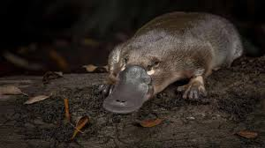
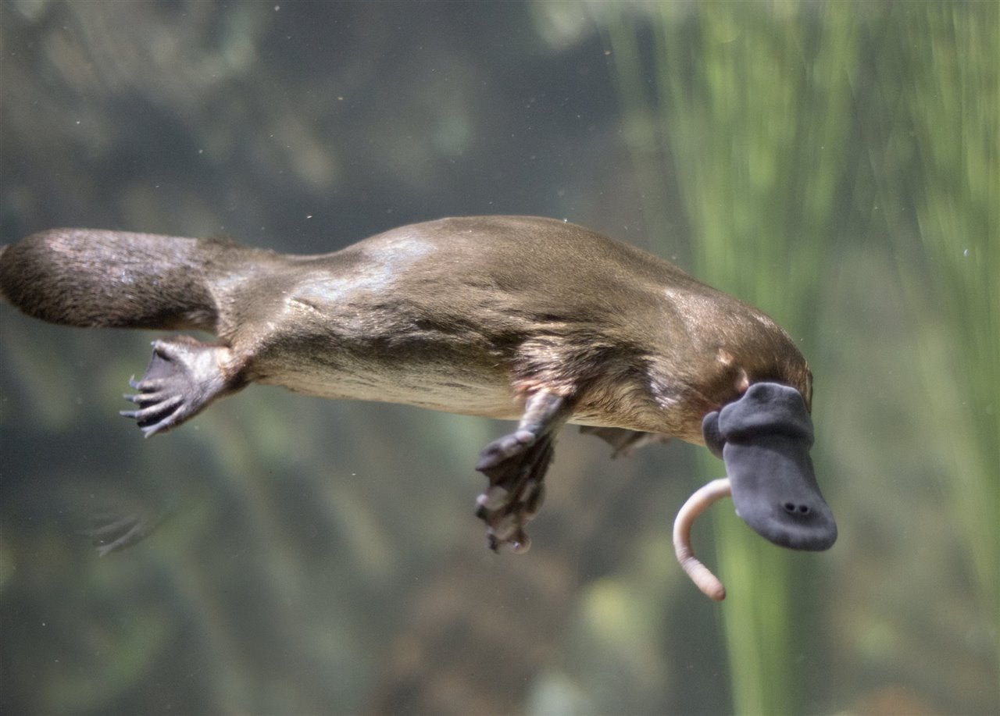

LOS ORNITORRINCOS
Que son?
El ornitorrinco (Ornithorhynchus anatinus) es un mamífero semiacuático único,
nativo del este de Australia y Tasmania, famoso por ser uno de los pocos mamíferos que pone huevos (monotremas)
en lugar de parir crías vivas.
mas informacion aqui

DATOS CURIOSOS
- Ponen huevos: Son monotremas, un grupo de mamíferos que pone huevos en lugar de dar a luz a crías vivas.
- Venenosos: Los machos tienen espolones en sus patas traseras que segregan un veneno capaz de causar un dolor intenso a humanos./li>
- Biofluorescencia: Bajo luz ultravioleta, su pelaje brilla con un color azul verdoso.
- Electrolocalización: Utilizan su pico, que tiene más de 40.000 receptores, para detectar las pequeñas corrientes eléctricas generadas por sus presas bajo el agua..
- Sin estómago: No tienen estómago; su esófago conecta directamente con los intestinos.
- Ojos cerrados al nadar: Al sumergirse, cierran sus ojos, oídos y nariz, guiándose exclusivamente por su pico.
- Aspecto de "parches": Cuando se descubrieron, los científicos europeos pensaban que eran falsificaciones, ya que parecen una mezcla de pato, castor y nutria.
- Nacen con dientes: Las crías tienen dientes para romper el cascarón, pero los pierden al poco tiempo, siendo adultos desdentados.
- Comilones de grava: Al no tener dientes, utilizan grava y lodo del fondo de los ríos para "masticar" su comida.
- No son buenos caminantes: Sus patas palmeadas son excelentes para nadar, pero al caminar en tierra firme, pliegan las membranas hacia atrás.
- Cola de castor: Usan su cola plana como timón al nadar y para almacenar grasa.
- Producción de leche: Aunque son mamíferos, no tienen pezones. La leche supura a través de su piel y las crías la lamen del pelaje.
mas datos curiosos aqui

por mauricio y yael